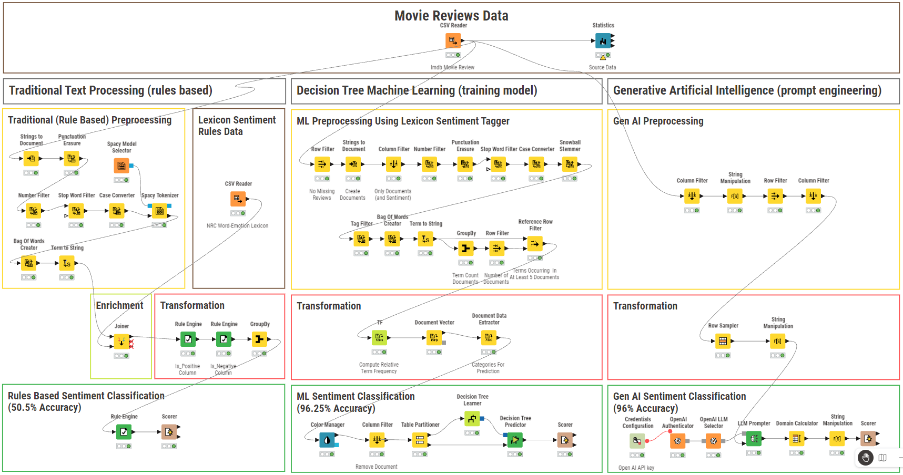

Welcome
US Higher Education Degrees by County
This work-in-progress seeks to understand how post high school education achievement matches actual employment in the United States.

GitHub Project: Higher education labor market alignment
US Annual Employment by County

GitHub Project: Higher education labor market alignment
KNIME Sentiment Analysis
This work demonstrates use of the KNIME Data Analytics and Workflow Platform to conduct sentiment analysis. 2000 movie reviews were analyzed, comparing three different scientific approaches for extracting individual opinion or feelings about a film.
While Gen AI can determine positive and negative sentiment with 96% accuracy, machine learning is well suited to the task, providing consistently reproducible results (96.25% accuracy) and better return on investment, not requiring the additional processing expense of Gen AI.

GitHub Project: KNIME Moview Review Sentiment Analysis